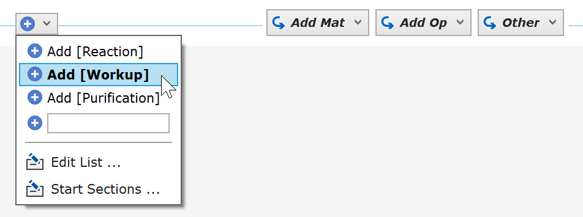
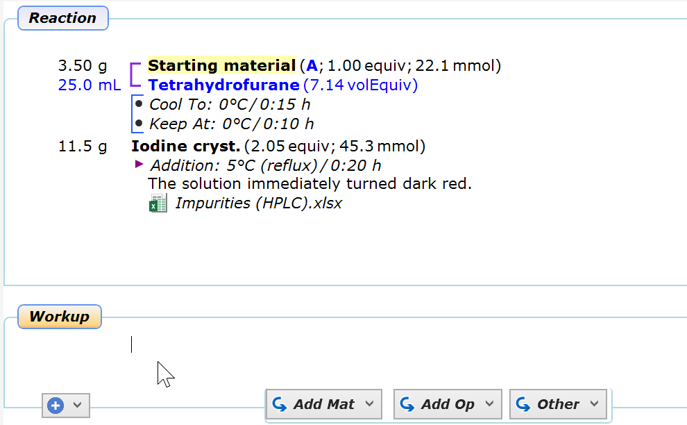
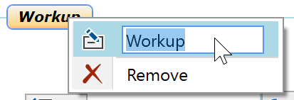
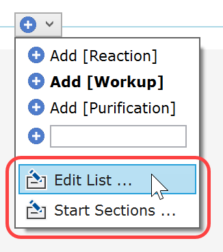

9) Add Experiment Sections
A chemical experiment workflow usually consists of a reaction, followed by a workup, and is often finalized by a purification procedure. Separating these phases within the experiment protocol makes it easy to understand the structure of an experiment. Please note that experiment sections can be further divided into smaller segments using Protocol Dividers.
By default, Espresso ELN creates a "Reaction" section for each new experiment. To add another section, click the dropdown button to the left of the Addition Toolbar. The appearing menu provides some titles of common workflow sections, but you also may enter a custom title in the empty text box below the names sections. In this example, click the "Add [Workup]" item:

A "Workup" section now appears below the original "Reaction" section, ready for entering more protocol data:

A section title can be modified at any time by clicking its label and editing the content of the text box of the appearing popup menu. The context menu also allows the removal of the complete section, if desired:

The contents of the sections dropdown menu, as well as the default section(s) appearing in new experiments can be customized from the menu items at the bottom of the menu:

- Edit List: Opens an editor for adding more default section titles to this menu, in addition to the default ones (Reaction, Workup and Purification), which can't be modified.
- Start Sections: Allows you to override the default behavior, where new experiments initially are assigned a "Reaction" section. An editor lets you specify one or a sequence of sections with custom title(s) to be initially present in new experiments.
Please note that there is a maximum of 6 sections per experiment, for application performance reasons.
Next Step: Add products and side products ...